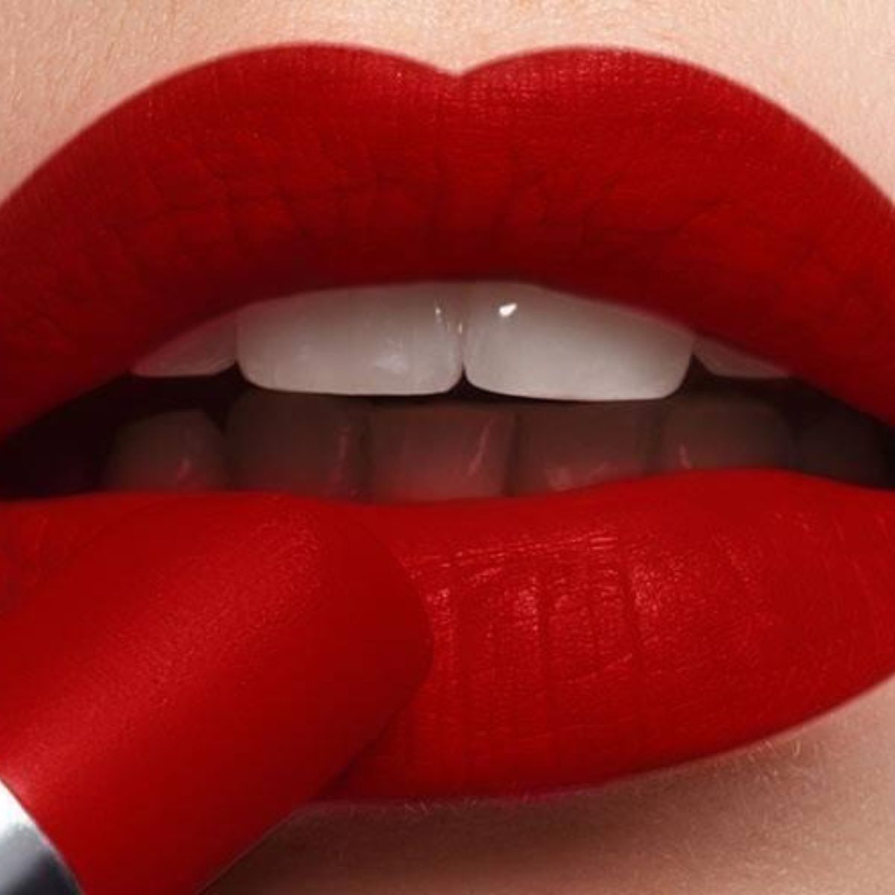
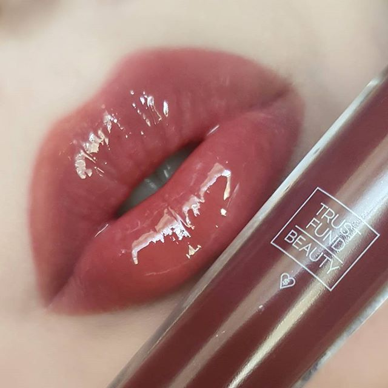
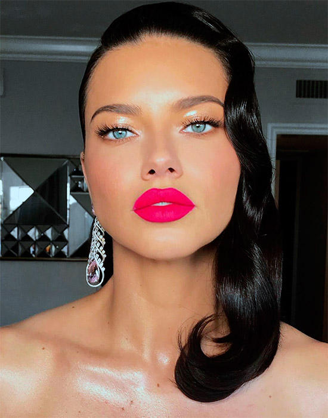
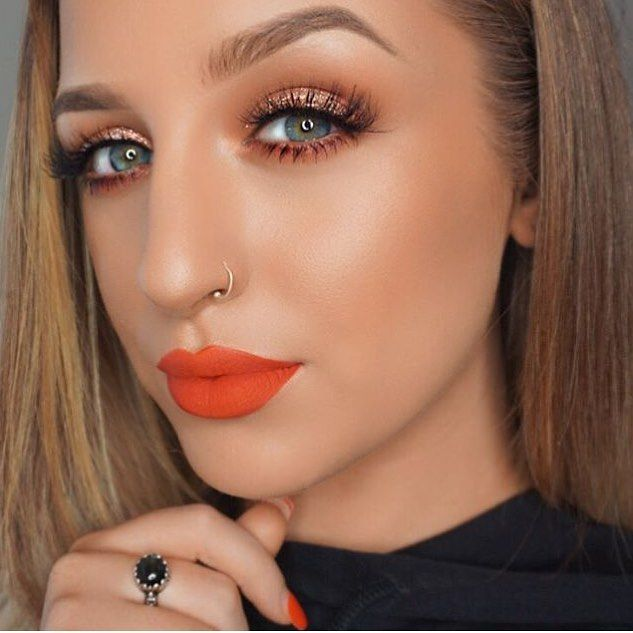
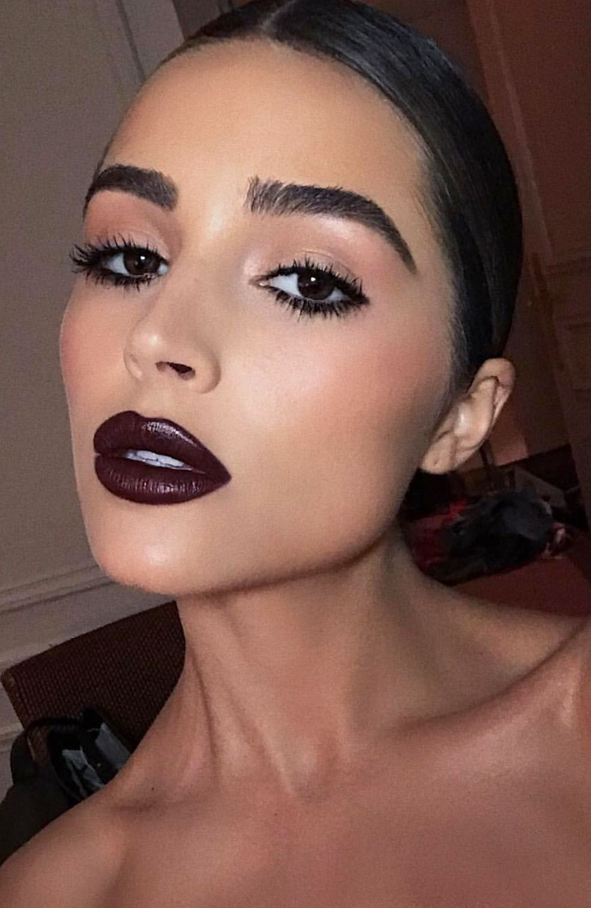

ROJO Es el color de labios de primavera-verano 2020 por excelencia, dado que es clásico, sexy y audaz.
GLOSS TRANSPARENTE ¡Yasss! Los labios con aspecto mojado, glossy y jelly son tendencia en esta temporada y te fascinarán por dos razones: Hacen tus labios más grandes y te restan varios años de encima.
FUCSIA Simplemente lo amamos porque no es tan fuerte como un magenta, pero tampoco es tan suave y cute como un rosa pastel. Es el punto medio para conseguir un look cool, que le saque partido a lo mejor de tus facciones y también perfecto para las chicas que no son fan del lipstick rojo, pero desean un labial que se le parezca.
NARANJA Es un color icónico de estas fechas por su frescura y tropicalidad. La clave está en elegir el que mejor le va a tu tono de piel. Si eres más cálida, inclínate por los naranjas con subtonos rosados y rojizos y, si eres más fría opta por aquellos que tienen una base más amarilla y matices color mango.
VAMPY Los vampy lips ya no son exclusivos para las épocas de frío, es posible llevarlos en 2020 como un color de labios de primavera-verano en sus dos versiones: completamente mate o como lacquered lips. Cualquiera de los dos aporta mucho carácter y hace todo el trabajo del maquillaje.
